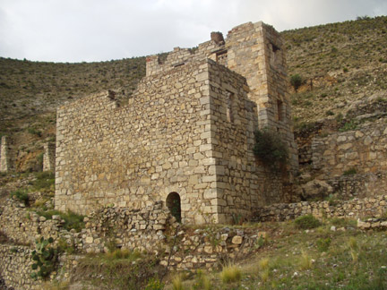

---------------------------------------------------------------------------------------------------------------------------------------------------------------------
El Milagro
The El Milagro Mine is up the old road southeast of the San Augustin mine (See Map). According to Ipina (IPIÑA,
p 34), it was discovered by Ventura Ruiz in 1779 who named it "El Senor de los Milagros". Ipina (IPIÑA,
p 27-38) states that Ruis found a rich silver outcropping when, the morning after sleeping out over night, found
beads of silver in the ashes of his cold campfire. More of these histories are repeated by Montejano (1,
p 19-21). Ruis also is supposedly the El Negrito for whom the Negrito mine was named.
El
Milgro is an extensive complex developed on two levels, the upper
having the open mine shafts and the lower part was perhaps used for
processing of the ore. This complex is one of the finer examples of a
local mine and is less visited than those in the "Pueble
Fantasma" area.
|
|
Overview of the entire Milagro complex as seen from the west.
|
The upper area of El Milagro view from Cerro Grande.
|
|

|
Structures and tailings in the upper area.
|
This
structure covers a deep shaft. The architecture is suggestive of a
scottish castle and perhaps indicates the presence of scottish
engineers in the Catorce mining district..
|
|
|
Overview of the lower area of Milagro.
|
Detail in the lower area. A mixture of stone and adobe construction.
|
---------------------------------------------------------------------------------------------------------------------------------------------------------------------